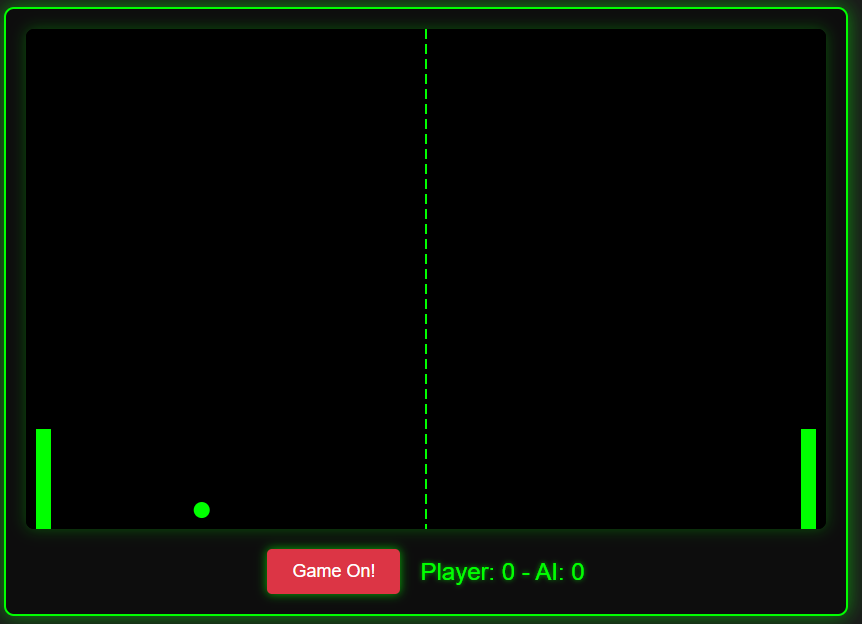

Stephen Jackson
Senior Technical Program Manager
Twelve years turning complex distributed systems into calm, reliable outcomes — across cloud migrations, observability, and AI-enabled delivery.
Reliability isn't an accident.
It's the product of clarity, coordination, and calm under pressure.
That's the work.
Here's where that's played out.
Experience
A track record across telecom, travel, and logistics — from hands-on engineering to cross-org program leadership.
-
01
Nov 2025 – Jun 2026
T-Mobile
Senior Product Owner
- Owned backend and API programs for customer data rights and privacy compliance (DSARs, data deletion) across T-Mobile's global privacy data systems.
- Coordinated a home Scrum team of 8 plus up to 6 partner PODs across upstream / downstream dependencies.
- Translated privacy regulations and legal requirements into technical specs, API contracts, and acceptance criteria.
- Drove AI / automation enablement: an approved Claude Code + Jira agentic workflow for Capex/Opex reporting (projected to save 1–5 days/month), a Microsoft Copilot weekly-reporting automation (~90% less manual effort), and org-wide AI enablement training across all roles.
-
02
Oct 2020 – Jul 2025
Expedia Group
Program Manager III / Technical Product Manager II
- Owned cross-org technical programs on the Expedia flights search platform, coordinating 20+ global teams across 8 time zones.
- Observability & anomaly detection: drove P1 incidents to zero and P2s down 90%+, cutting MTTD/MTTK/MTTR — avoiding 95%+ annual revenue loss and incident costs.
- In-memory database migration to Redis: led decommissioning of a legacy store, authored the escalation / war-room playbook, and ran follow-the-sun coverage to prevent T0 incidents.
- Search performance migration: improved search response time by up to 50% and cut annual cloud costs by 45%, integrating ML features with the ML platform team.
- Owned product and technical strategy for an app serving tens of millions of customers, running 10+ concurrent initiatives per quarter.
-
03
May 2019 – Aug 2019
inWhatLanguage
Product Manager
- Directed strategy for the launch of a new B2B translation product, steering the company to its first pre-launch, business-level sale.
- Owned the first-release feature roadmap and ran client interviews that surfaced onboarding improvements delivered to executives.
-
04
Dec 2011 – Jul 2018
Expeditors
Software Engineer (QA, Java, UI)
- Built and tested full-stack features for an enterprise accounting system — backend in Java, Spring, and SQL; front-end in AngularJS and Bootstrap.
- Authored automated and manual test suites and contributed to the system's Cobol-to-Java migration, driving company-wide adoption.
Education
MBA / MSIS — University of Utah, David Eccles School of Business (2018–2020).
BA, Business Administration — Seattle University (2007–2012).
Certifications
PMP · PSPO I · PSM I · Certified Redis Developer · Certificate in Java Programming.
Core skills
Technical Program Management · Stakeholder Management · Cross-functional Team Leadership.
Portfolio
A couple of small things I built with AI — playable in the browser.
04
Let's connect.
Open to conversations about technical program leadership, reliability, and building with AI. If that's you, say hello.
Connect on LinkedIn